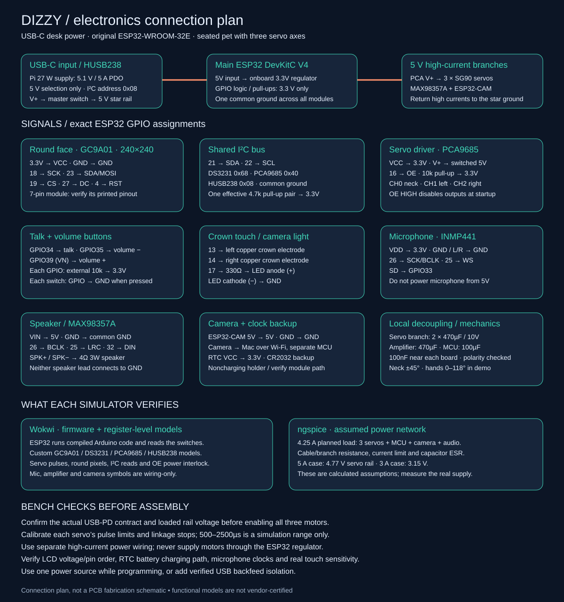
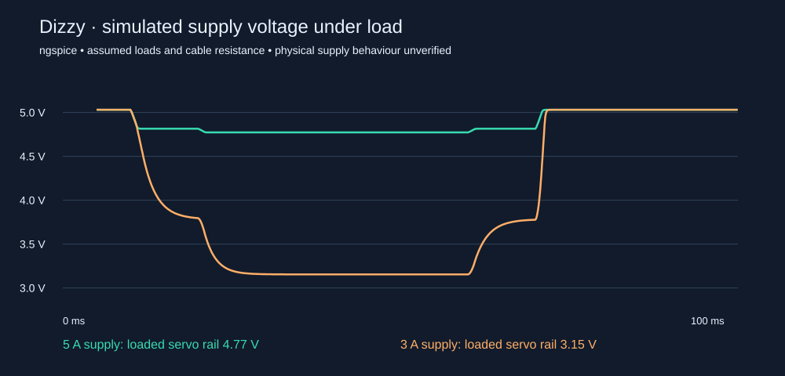

DIZZY / CONNECTIONS & SIMULATION
Inside your desk companion.
The chosen components, exact connections and power tests in one place. The separate Wokwi tab runs the real ESP32 bring-up sketch; Webots continues to handle the robot’s pet behaviour and Mac voice service.
FIRMWARE
Wokwi
ESP32, five test buttons, round 240×240 screen, clock reads and three servo outputs. Custom peripheral models are labelled in the circuit.
POWER
ngspice
Transient calculations with cable resistance, capacitors and an assumed 4.25 A peak load. Compare the 5 A and 3 A supply cases below.
PHYSICAL CHECKS
Still on the bench
Real USB-PD negotiation, servo torque, touch sensitivity, Bluetooth, camera and I²S audio. Camera and audio symbols show wiring only.
DIRECT WOKWI RETEST · 19 NOVEMBER 2026
Volume-up wiring fixed and retested.
GPIO39 uses the board’s VN terminal. The corrected connected switch now produces 50 → 55 → 50 with volume-down. Display, clock, talk input, neck, shoulders, crown reactions, alarm snooze and the modelled power interlock were exercised directly in Wokwi.
Camera, microphone and amplifier blocks remain wiring-only. A tightly timed double-tap remains unverified through browser automation.
Read direct Wokwi results · View circuit test screenshotTESTED · 19 NOVEMBER 2026
Simulation results are ready.
10 live Webots checks, 3 restart/messaging checks, the voice-service outage check, 7 electronics check groups and 130 existing tests passed. Camera capture and spoken output were verified.
Power finding: the baseline has little voltage margin. Four stressed power cases fall below the 4.75 V planning target. Physical power delivery remains unverified.
Read the full test report · View camera sample · Play speech sampleConnection plan

Power simulation results

The firmware checks the reported 5 V / 5 A contract before enabling motor outputs. Changing Wokwi’s HUSB238 slider to 3 A tests that interlock. This slider does not perform electrical USB-C negotiation.
Try the open circuit
| Control | What happens |
|---|
| Talk / Vol − / Vol + | PTT status and volume variable. Audio stays on the Mac. |
| Crown L / Crown R | Pet blink; double-tap waves; hold gives good-night event. |
Serial: left right center | Moves the neck between −45° and +45°. |
Serial: wave hello | One or both hands lift and return to rest. |
Serial: alarm | Visual test alarm after five seconds; touch to snooze. |
| HUSB238 slider: 3 → 5 A | Disables then restores motor outputs, shown as OE status. |